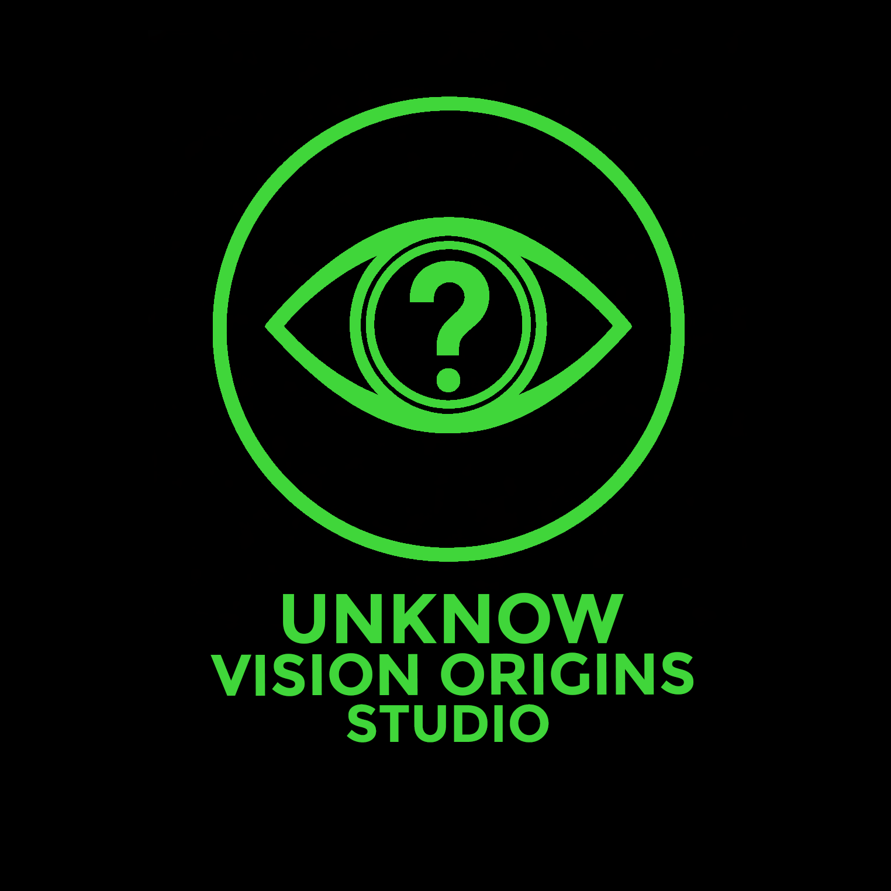

Un Studio encargado de producir:
Es una obra literaria extensa escrita en prosa que narra una historia e integra los diálogos de sus personajes mediante el uso de guiones.
Son paneles gráficos (en formato digital o físico) compuesto por viñetas y texto que narra una historia mediante dibujos, caracterizada tradicionalmente por su lectura de derecha a izquierda y su estilo visual.
Es un producto audiovisual animado (tradicional o digital) que adapta historias de mangas o novelas mediante movimiento, color y sonido, combinando dibujos y doblaje para narrar una trama.
Es una obra de narrativa breve dividida en capítulos cortos y ágiles, recopilada habitualmente en volúmenes individuales y complementada con ilustraciones de estilo gráfico para enriquecer la historia.
Colocar a Venezuela como la número 1 del mundo del entretenimiento, abarcando la Novela, manga y anime.
A través de los Visionarios
Los Visionarios son personas ambiciosas, analíticas y críticas, impulsadas por una inconformidad constructiva. Cuentan con la capacidad estratégica para liderar, administrar y optimizar cualquier proceso clave dentro del estudio.
Encargado de gestionar y supervisar la producción de mangas y novelas, además posee un talento extraordinario en el dibujo, puede optimizar cualquier proceso y resolver cualquier problema.
Encargado de gestionar y supervisar la investigación de los temas, con el fin de tener historias ricas en lore, además es una persona capaz de narrar grandes historias y saber expresarlas de manera correcta, también es una persona con muy buena memoria.
Encargado de gestionar y supervisar la producción de animes, es una persona capacitada para optimizar los procesos de animación sin perder calidad.
Encargado de la publicidad del Studio, además aporta mucha retroalimentación del público.